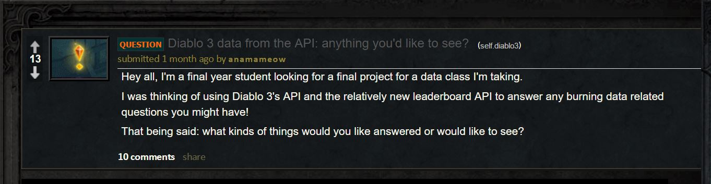
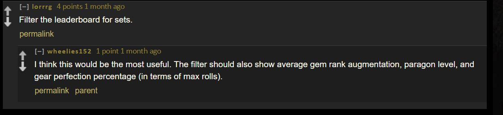
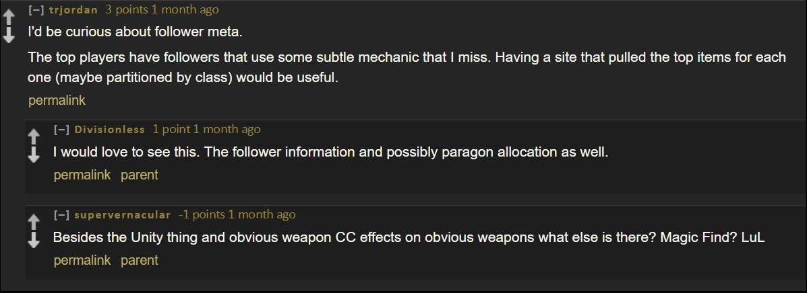
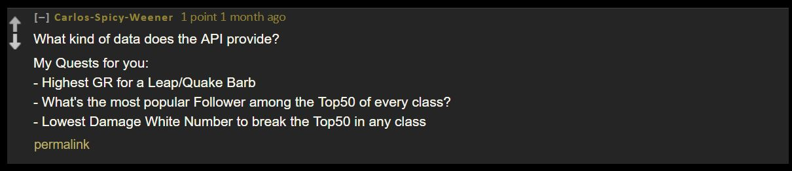
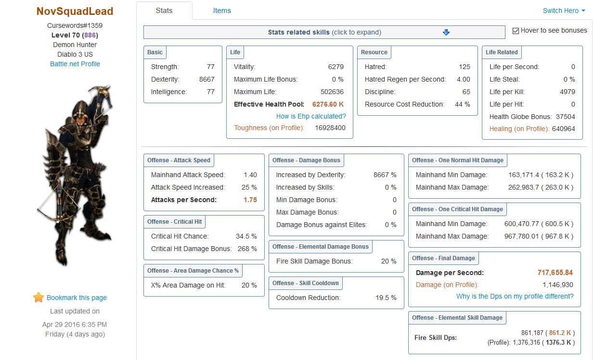

INFO 550 Final Project
Sara Khan
What is Diablo 3?
- It is a competitive Action RPG
- Made in 2012
*
- New "Season" starts every 3 months
- Race to the top of the leaderboard
You can pick 1 of 6 classes:
- barbarian
- witch doctor
- monk
- demon hunter
- wizard
- crusader
Barbarian

Witch Doctor

Monk

Demon Hunter

Wizard

Crusader

Theorycraft
- You have unique skills and items that let you kill stuff faster
- How can you minimize and maximize your hero stats to win?

In August 2015, the Diablo 3 API became available...
So I decided to ask the Diablo 3 Community what questions they'd like answered from the API.
My question...

The answers...

The answers...

The answers...

I decided on two research questions..
1. Does the rank of a person correspond to any player statistic?
What is a player statistic?

Again, the queston:
Does the rank of a person correspond to any player statistic?
To answer that, I created an interactive polychart.js graphic with "dat.gui" (angularJS) controls built in.
My second question was to answer what "clothing sets" are the most popular in the top leaderboard.
Clothing gives certain attributes to increase player stats.

To answer this, I looked at the most frequent sets per class. I wanted to look at the top 1000 and top 100 to see differences.
I'll use the "nv.d3" javascript library to plot each class and the most frequent sets used.
Methods
- Get the names of top 1000 players from the most current leaderboard from the Diablo 3 API.
- Get data of the top 1000 players from a different data source on the same API.
- Cleaning.
- Answer the research questions and create graphs.
- Host the data for people to see.
First step
Get the names of top 1000 players from the most current leaderboard from the Diablo 3 API.
top1000<-fromJSON(paste0("https://us.api.battle.net/data/d3/season/6/leaderboard/achievement-points?access_token=",SARAKEY))
## Rank HeroBattleTag HeroId HeroClass
## 1 1 Knightmare#1642 50291904 demon hunter
## 2 2 Cursewords#1359 75503053 demon hunter
## 3 3 wby#1325 75508223 demon hunter
## 4 4 Blacksheep#1512 75438396 demon hunter
## 5 5 Beldox#1259 75506076 wizard
## 6 6 Tarzimal#1145 75510116 demon hunter
## Rank HeroBattleTag HeroId HeroClass
## 1 1 Knightmare#1642 50291904 demon hunter
## 2 2 Cursewords#1359 75503053 demon hunter
## 3 3 wby#1325 75508223 demon hunter
## 4 4 Blacksheep#1512 75438396 demon hunter
## 5 5 Beldox#1259 75506076 wizard
## 6 6 Tarzimal#1145 75510116 demon hunter
Second step
Get data of the top 1000 players from a different data source on the same API.
I had to create unique urls for each user and their "hero" number...
heroItemURL <- lapply(1:1000, function(i) {
paste0("https://us.api.battle.net/d3/profile/",
results$HeroBattleTag[i],
"/hero/",
results$HeroId[i],
"?locale=en_US&apikey=",
key)
})
And then use that URL to create 1000 queries to the Battle.Net API
heroItems<-lapply(1:1000, function(i) {
fromJSON(heroItemURL[[i]])
})
I ran into a problem, however.
There were unicode characters in some of the URLs (around 40-50 users)
"https://us.api.battle.net/d3/profile/流星追月#3113/hero/69485497?locale=en_US&apikey=SARAKEY"
Those URLs did not render in R, but they somehow fixed themselves and were able to correctly get back the data.
Third step
Cleaning
The data that was returned were in nested lists within lists...
So I had to be creative in grabbing the data out of it.
Here's an example:
setItems<- lapply(1:1000, function(i) {
(heroItems[[i]]["items"][[1]][1][[1]]["setItemsEquipped"][[1]])
})
More cleaning
Here's an example of a function I wrote called "setClean".
This loops through the 6 classes to pull out the most frequent sets for each class.
setClean<-function(x){
as.data.frame(xtabs(~ setName + class , x))[!as.data.frame(xtabs(~ setName + class , x))$Freq==0, ]
}
classSets1000<-setClean(heroSetDataFinal) #all 1000 top players
classSets100<-setClean(filter(heroSetDataFinal, (rank%in%(1:100)))) #only the top 100 ranked players
head(classSets1000)
Fourth step
Creating graphs to answer my questions
I used the rCharts package to create the interactive visualizations
sets1000Plot <- nPlot(
Freq ~ class,
group = "setName",
data = classSets1000,
type= "multiBarChart"
)
Fifth step
Publishing my results
To create these slides, I used slidify.
I had a problem embedding the visualizations inside my slides. This took a while to figure out..
To solve this, I embedded the graphs with HTML iFrames.
I also wanted to publish this on GitHub pages for other users to see.
- I used Jekyll
- GitHub Pages
- Slidify published on GitHub pages
Jekyll
Jekyll is a static site generator that integrates with github. You can create and publish jekyll blogs to your github from RStudio using Yihui's Knitr Jekyll repo.

Next steps
Plot my results onto a website for people to view on github.
Thanks!

Questions?